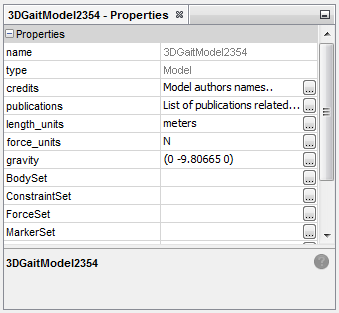
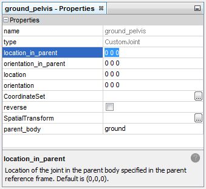
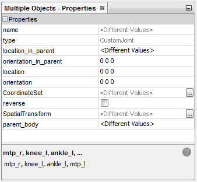
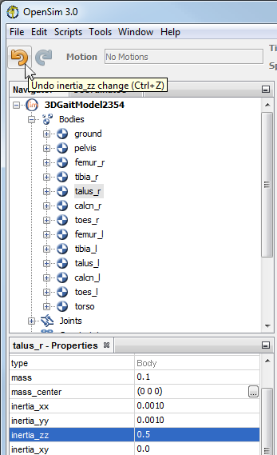

The Property Editor is a generic, streamlined editor for the objects that make up an OpenSim model (bodies, joints, muscles, etc.). This page describes:
What is a model property?
OpenSim models and objects are defined by a set of Properties. For example, a Marker is a simple OpenSim object, with properties including its "name", whether or not it is "fixed" during Scaling, the "body" it is attached to and its "location". These properties completely define a marker, so that when you load a file with a given marker into OpenSim, the visualizer knows how to display it and the Scale tool knows to use it during Scaling.
When you open an .xml files or .osim files you see the property names as xml tags. With the edition of the Property Editor, as of version 3.0, you can also see and edit the properties of an OpenSim object in the Property Editor. You can see the properties of existing OpenSim objects. If you're an advanced user writing plugins, you can also see and edit the properties of new objects that you create (see Command Line Utilities).
Properties are hierarchical in nature so they can be either of the following:
- Simple properties (name, value pairs), like "mass" = 100.0, "mass_center = "(0.0 0.1 0.2)"
- Objects composed of a set of simple properties or simpler objects (e.g. bodies have a property "Joint" which is in turn defined by a set of properties)
Opening the Property Editor
|  | The Property Editor appears in the bottom left corner of the OpenSim GUI by default. If it's not visible, you can open the Property Editor by selecting Window -> Properties. |
|---|
Selecting an Object to Edit
There are three methods to select an object to edit.
Using the Navigator Window
- If the Property Editor is not open, open it by selecting Window -> Properties.
- Next, in the Navigator Window, expand the model tree to find the object of interest. You can do this by clicking on the plus
 sign next to the name of the model to display the model components, and then clicking on the plus sign to expand the branch further, as needed. In some models, muscles are organized into groups, in which case you will also have to click on the plus sign next to the group containing the muscle.
sign next to the name of the model to display the model components, and then clicking on the plus sign to expand the branch further, as needed. In some models, muscles are organized into groups, in which case you will also have to click on the plus sign next to the group containing the muscle. - Left or Right Click on the name of the object in the Navigator window.
- The Property Editor will now show the properties of that selected object.
Using the 3D View Window
The second method operates in the 3D View window, and applies only for objects that have a visual representation in the 3D view.
- To select an object for editing, first make sure that the model containing the object is the current model. (See Opening, Closing, and Using the Navigator Window for more information about how to make a model current.)
- Press the ctrl key to enter selection mode. You will see the cursor change into a small crosshair to indicate that you are in selection mode. Keep the ctrl key pressed and left click on an object to select it.
- Alternately, you can select in the 3D view by Double Clicking on the object in the 3D view.
When an object is selected using the 3D view, it is displayed in yellow on the 3D model. Its name is also shown in the text bar at the bottom of the OpenSim window.
Using the Property Editor
Once the property editor is open and an object is selected, the object's properties are displayed in table format in the Property Editor. You can change the values of these properties by changing values in the Property Editor window. These changes take effect immediately.
Normally the values are displayed an editable text box. In some special cases, the user interface can display a more customized editor. For example a checkbox is shown for a boolean (true/false) value. COlors and Functions also have specialized editors. For more complex objects a ... Box is shown. Clicking on this box, will bring up a separate, specialized editor for this property.
The bottom of the Property Editor displays a description of the selected property and usually includes a valid range of values or default values.
The screen capture below shows the contents of the Property Editor when a joint ("ground_block") is selected:
|  |
In addition to the properties of the object, the editor shows two more (usually uneditable) entries in the table of properties:
|
|---|
Selecting and Editing Multiple Objects
You can select and edit multiple objects of the same type in the Property Editor
|  |
|
|---|
Undo/Redo Support
One of the key advantages of the new property editing mechanism, is that it support undoing and redoing changes.
|  |
|
|---|
Next: Marker Editor
Home: Model Editing
{kind=link}
{kind=link}
{kind=link}
{kind=link}